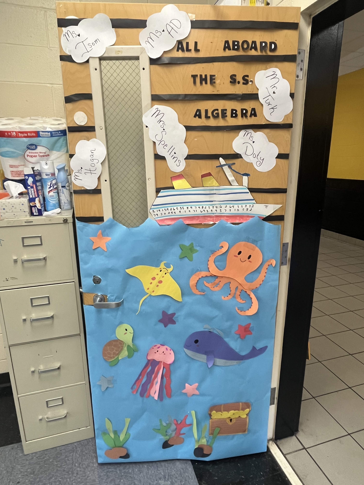
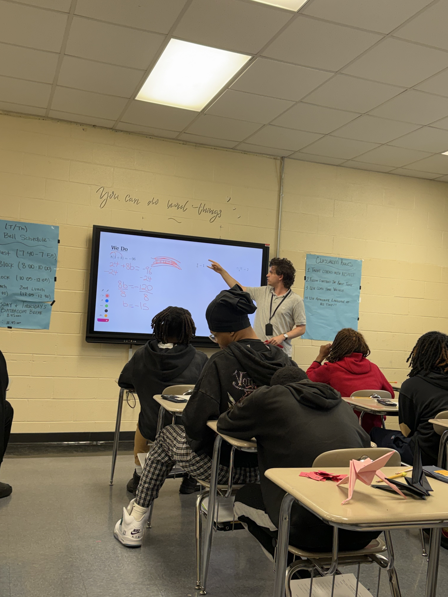
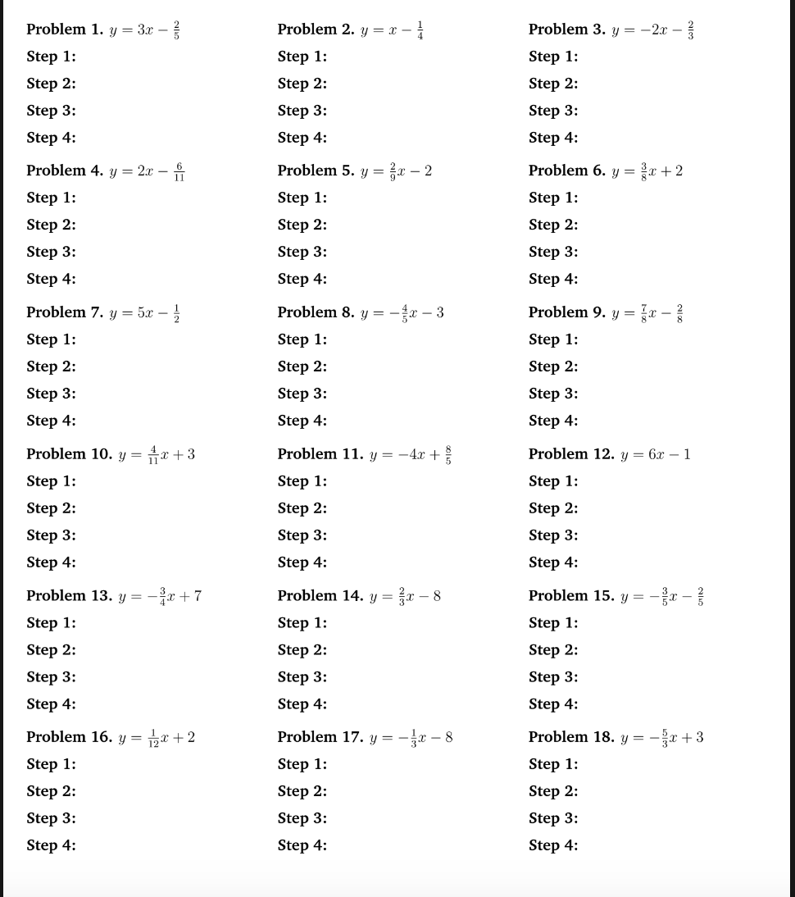

Building a welcoming and productive environment for the students is one of the most urgent causes for any teacher. I strive to make my classroom fun and engaging through a number of aesthetic and interactive design choices.


I always push for high rigor in my students' learning while still trying to meet them where they are and scaffold them up to where they need to be. It's a difficult balance to strike, but one that can be struck with careful precision and strong design choices.